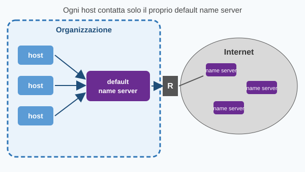

Come si usa il DNS


Il default name server
- Ogni host è configurato con l'indirizzo IP del proprio default name server (IP-DNS): deve essere noto a priori, altrimenti sarebbe impossibile contattarlo.
- Ogni host contatta sempre e solo il proprio default name server (o evenutalmente il local resolver).
- La ricerca dell'informazione la fa il default name server, non l'host.
- Il default name server fa sia da server (ascolta i client) sia da client (interroga altri name server).
Due casi tipici
| Caso 1 | aziende e università | Name server interno all'organizzazione. Il traffico DNS verso l'esterno è permesso solo a quel name server (per prestazioni, con la cache, e per cybersecurity: si blocca la risoluzione dei nomi legati ad attacchi) |
| Caso 2 | Internet provider | Name server interno, ma il traffico DNS uscente è permesso a qualsiasi nodo: chi vuole configura il proprio host con un name server esterno, ad esempio 8.8.8.8 (Google public DNS) |